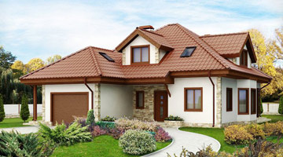
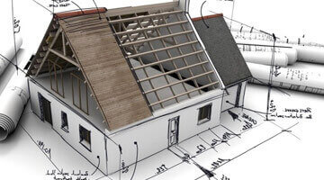
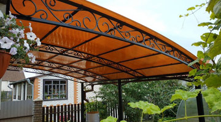

Услуги и цены
Архитектурная часть
-
Комплект «Минимальный» *от 195р.
Проработка объемно-планировочного решения; общие указания; характерные фасады; ведомость наружной отделки; схемы этажей; экспликация помещений; кладочные планы этажей; конструкция наружных стен; разрез; план кровли; указания по производству работ; генеральный план.
* данный комплект является достаточным для согласования и разрешения на строительство
-
Комплект «Базовый»от 345р.
Проработка объемно-планировочного решения; общие указания; характерные фасады; ведомость наружной отделки; схема фундамента; схемы этажей; экспликация помещений; кладочные планы этажей, основные узлы кладки; ведомость проемов; конструкция наружных стен; характерные разрезы; план кровли, основные узлы кровли; схемы крыльца и террасы; указания по производству работ; генеральный план.
-
Комплект «Расширенный»от 985р.
Проработка объемно-планировочного решения; общие указания; ведомость расхода основных строительных материалов; характерные фасады; ведомость наружной отделки; схема фундамента, схемы этажей; экспликация помещений; экспликация полов; ведомость внутренней отделки; кладочные планы этажей, узлы кладки; ведомость проемов; схемы заполнения оконных проемов; конструкция наружных стен; характерные разрезы; план кровли, узлы кровли; ведомость элементов водосточной системы, узлы; схемы утепления фасадов;схемы крыльца и террасы, узлы; схемы вентиляционных и дымовых каналов; указания по производству работ; генеральный план.
Конструктивная часть
-
Конструкции деревянные
Расчет и проектирование несущих конструкций. Общие указания; необходимые схемы расположения элементов; характерные разрезы; ответственные узлы; ведомости элементов и расход древесины, нагелей и элементов крепления; деталировочные чертежи (при необходимости); указания по выполнению работ.
-
Конструкции железобетонные
Расчет и проектирование несущих железобетонных конструкций. Общие указания; необходимые опалубочные чертежи монолитных конструкций; характерные разрезы; схемы армирования; узлы; схемы расположения сборных элементов; схемы анкеровки плит; схемы расположения анкеров мауэрлата, ведомость элементов; схемы деталей (арматурных изделий); расход арматуры и бетона; указания по выполнению работ.
-
Конструкции металлические
Расчет и проектирование металлических конструкций. Общие указания; необходимые схемы расположения элементов; характерные разрезы; ответственные узлы; ведомости элементов и техническая спецификация стали; деталировочные чертежи (при необходимости); указания по выполнению работ.
Дополнительные услуги
-
Авторский надзор
Осуществление надзора за возведением объекта по разделам строительного проекта; оценка соответствия возводимых конструкций и технико-экономических показателей проектным решениям и значениям.
-
Архитектурно-планировочная концепция
Описание
-
Разбивка фундамента
Описание
Статьи
-
Хотим свой дом! С чего начать? (1 часть)
В этой части цикла статей мы расскажем вам куда обращаться, для получения/приобретения земельного участка и о необходимой документации для получения разрешения на проектирование ...
-
Хотим свой дом! С чего начать? (2 часть)
Ну вот, участок есть, разрешение есть — можно приступить плотнее к обдумыванию параметров будущего дома. Первым делом следует решить хотите вы типовой (готовый) проект, или вам важна ...
-
Хотим свой дом! С чего начать? (3 часть)
Генеральный план на ряду с архитектурным решением является обязательной и утверждаемой частью проекта. Он необходим для отражения границ участка, положения дома и сооружений, размещения ...
-
Инсоляция. Почему это важно
Мало кто в курсе, но микроклимат в вашем жилище во многом зависит от инсоляции. Говоря простыми словами, инсоляция это попадание прямых солнечных лучей в ваш дом/квартиру/комнату ...
-
Как крепить сотовый поликарбонат
Доподлинно известно, что поликарбонат при деформировании издает звуки (хруст, потрескивание). Деформироваться материал может от температурного воздействия и при недостаточно жесткой конструкции ...